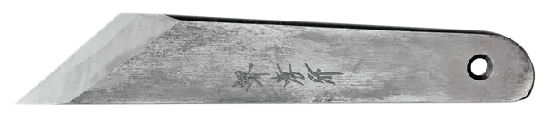

Japanilainen perinneveitsi avaa portin metallurgian maailmaan — atomirakenteista käsityötaitoon, kivikaudelta supertankoihin. Tämä on materiaalin kunnioitusta parhaimmillaan.
Metallien historia on ihmiskunnan historia. Jokainen löytö — kupari, rauta, teräs — ei vain muuttanut työkaluja vaan muutti yhteiskuntia, valtasuhteita ja maailmankuvia.
Kupari löydettiin luonnonmukaisessa muodossaan. Se oli pehmeää, mutta mullisti kaiken. Anatolia, Lähi-itä ja Egypti alkoivat valaa esineitä malmeista. Metalliurgia syntyi.
Kupari + tina = pronssi. Keksittiin vahingossa tai kokeilemalla: seokset voivat olla huomattavasti lujempia kuin puhtaat metallit. Tämä periaate pätee edelleen. Sivilisaatiot — Mesopotamia, Kreeta, Kiina — rakennettiin pronssille.
Rautaa oli kaikkialla, kuparin raaka-aineet harvoilla. Raudan sulatustekniikka levisi nopeasti. Aseet, työkalut ja maatalousvälineet yleistyivät. Kulttuuri, jolla oli parempi teräs, voitti.
Wootz-teräs (Intia) ja tamahagane (Japani) edustivat käsin valmistetun teräksen huippua. Japanilainen miekkataito — tamahaganen taonta, poimitus ja karkaisutekniikat — ovat suoraa perintöä kiridashi-veitsessä.
Henry Bessemerin keksintö mahdollisti massateräksen valmistuksen. Siltojen, rautateiden ja pilvenpiirtäjien aikakausi alkoi. Teräs ei ollut enää käsityöläisten aarreaitta vaan teollinen raaka-aine.
Kromi (yli 10,5 %) muodostaa teräksen pintaan näkymättömän kromidioksidikalvon, joka suojaa korroosiolta. Tämä keksintö muutti kirurgian, elintarviketeollisuuden ja arkkitehtuurin.
Volframi, vanadium, molybdeeni, koboltti — jokainen seosaine toi uuden ominaisuuden. Pikateräs (HSS) mahdollisti modernin konepajan. Titaaniseokset mullistivat ilmailun ja lääketieteen.
Atomitasolla suunnitellut rakenteet, korkeatyppinen teräs, amorfinen metalli ja additiivisesti valmistetut metallirakenteet. Metalliurgia sulautuu tietojenkäsittelytieteeseen.
Kaikki teräkset eivät ole samaa ainetta. Hiilipitoisuus, seosaineet ja valmistustapa määräävät lopputuloksen yhtä vahvasti kuin taonta ja lämpökäsittely.
Yli 10,5 % tekee ruostumattoman. Pienet määrät parantavat kovuutta ja korroosiokestävyyttä. 80CrV2:ssa ~0,5 % Cr.
Hienojakoisempi kiderakenne. Parempi kulumiskestävyys ja sitkeys. 80CrV2:ssa ~0,2 % V — tämän takia se antaa anteeksi lämpökäsittelyvirheitä.
Parantaa karkenevuutta eli teräs kovettuu syvemmältä öljyssä. Myös rikkiä sitova vaikutus estää haurautta. Useimmissa terästangoissa 0,3–1,0 %.
Nostaa karkenevuutta ja korkean lämpötilan lujuutta. Pikateräksissä (HSS M2) keskeinen aine. Teräksen "backstage-sankari".
Parantaa sitkeyyttä myös matalissa lämpötiloissa. Säiliöteräkset, laivojen rungot. Ruostumattomissa terästyypeissä (316) korvaamattomuus.
Korkein sulamislämpötila kaikista metalleista (3 422 °C). HSS-terästen tärkein aine — kovuus säilyy kuumuudessakin. Sorvausterät, poranterät.
Nämä termit esiintyvät jatkuvasti materiaalitieteessä, konetekniikassa ja muotoilun dokumentaatiossa. Opettele ne — ne ovat ammattilaisen perussanasto.
Metalli käyttäytyy eri tavoin riippuen siitä, käsitelläänkö sitä huoneenlämmössä vai punakuumana. Muotoilijana ymmärrät molemmat ja valitset tilanteen mukaan.
Metallia muokataan sen rekristallisaatiolämpötilan alapuolella (teräksillä alle ~400 °C). Kiderakenne venyy ja vääntyy — lujittuminen (work hardening) tapahtuu.
Yli rekristallisaatiolämpötilan tehtävä muokkaus. Teräs on pehmeää ja muovattavissa — rakenne tiivistyy ja parantuu taonnan myötä.
CNC-koneistus mahdollistaa äärimmäisen tarkkuuden. Teräs poistetaan lastuamalla — nopeus, syöttö ja lastuamisgeometria ovat avainasemassa.
Epätarkka mutta nopea materiaalinpoisto. Terän profiili muovataan kulmahiomakoneella tai hiomaremmelillä. Ylikuumeneminen vaarana — käytä vettä tai jäähdytä usein.
Korkeahiilinen teräs on haastavaa hitsata — vaarana halkeilu. Juottaminen (brasaus) sopii paremmin veitsinteon liitoksiin esim. kädensijan kiinnityksessä.
Sähköpurkaus poistaa materiaalia — jopa karkaistu teräs käy. Muottiteollisuuden peruskivi. Ei mekaaninen leikkaus → ei jännityksiä.
SLM (Selective Laser Melting) sulattaa metallijauhetta kerros kerrokselta. Titaani, ruostumaton, alumiini. Vielä harvinainen pajaympäristössä, mutta kasvussa.
Happoetsaus, anodisointi (Al), parkerointi (Fe₃O₄). Kiridashissa käytetään happopatinointi tai öljynpolttomenetelmää korroosionestoon esteettisen pinnan lisäksi.
Lämpökäsittely on hetki, jossa terä joko onnistuu tai epäonnistuu. Jokainen vaihe on täsmällinen ja syy-seuraus on suora atomirakenteen muutoksista.
Taonnan jälkeen kiderakenne on epätasainen ja sisäiset jännitykset suuria. Kolme normalisointisykliä (kuumennus → ilmajäähdytys) pienentää raekoon ja tasaa jännitykset. Tämä on pitkäpiimäistä mutta välttämätöntä.
Erittäin hidas jäähdytys (alle 20 °C/h) tuottaa pallomaisempaa sementtiittiä ferriittimatriisissa — maksimaalinen pehmeys (<HRC 20). Nyt teräs hioutuu helposti oikeaan muotoon. Jätä terässuuhun 0,5 mm lihaa — ei saa palaa karkaisussa.
Teräs kuumennetaan tasaisesti (ei liian nopeasti) austeniitin alueelle. Hiili liukenee rautahilaan. Tarkistus: kun magneetti ei enää tartu, austeniitointi on tapahtunut (Curie-piste). Pidä lämpötilassa 5–10 min tasaisen rakenteen varmistamiseksi.
Terä upotetaan nopeasti öljyyn — ei hitaasti laskien. Liike öljyssä (edestakaisin, ei pyörteilevä) parantaa jäähdytystasaisuutta. Teräs saavuttaa HRC 65+ — nyt se on lasinkovaa ja äärimmäisen haurasta. Pidä terässuun suuntaus tasaisena ettei se vääristy.
Välittömästi karkaisun jälkeen uuniin. Kaksi päästökierrosta 1 tunti per kierros antaa tasaisemman tuloksen. Tavoite: HRC 60–63. Tässä lämpötilassa osa martensiitista muuttuu päästömarteniitiksi — jousimaisempaa, vähemmän haurasta. Terä taittuu ennen katkeamistaan.
Pidä pieni neodyymimagneetti hiilihangen tai propaanikaasupolttimen vieressä. Kuumenna terä hitaasti — kun magneetti ei enää tartu, olet Curie-pisteessä (~770 °C). Lisää vielä 30–50 °C kirkkaamman värin verran, sitten öljyyn. Yksinkertainen, tehokas, perinteinen.
Metallin ominaisuudet ovat suora seuraus siitä, miten atomit ovat järjestäytyneet. Kiridashi-veitsen koko tavoite on hallita tätä järjestystä lämpökäsittelyllä.
Ferriitti (α-Fe) · huoneenlämpö
pehmeäsitkeämagneettinen
Austeniitti (γ-Fe) · 727–1400 °C
ei magneettihiili liukenee
Martensiitti · syntyy karkaisussa
äärimmäisen kovahauras
Rauta-hiili-piirros (Fe-C phase diagram) on metallurgian perusdokumentti. Se kertoo minkä faasin/rakenteen terässeos muodostaa tietyssä lämpötilassa ja hiilipitoisuudessa. Tärkeimmät pisteet:
80CrV2:ssa (n. 0,8 % C) liikumme hyvin lähellä eutektoidipisteettä — optimaalisin lähtökohta terästä varten joka tarvitsee sekä kovuutta että sitkeyyttä.
Terä on valmis vasta kun se on teroitettu. Japanilainen teroitusperinne on maailman hienostuneinta — se perustuu kärsivällisyyteen, tasaiseen kulmaan ja oikeaan progressioon.
Kiridashi on chisel grind — vain yksi puoli on hiottu kulmaan, toinen on täysin tasainen (Ura, 裏). Tämä tekee terästä äärimmäisen terävän mutta vaatii tasaisen, litteän teroitustekniikan.
Nahkahihna + stroppauspasta (Cr₂O₃ tai Al₂O₃) oikaisee purseen ja kiillottaa terää kiviä käyttämättä. Aina vastakarvaanleikkuusuuntaan — ei kohti terää. 10–20 vetoa kummallakin puolella riittää päivittäiseen ylläpitoon.
Referenssiprojekti: instructables.com/DIY-Kiridashi-Knives. Valmistuksessa sovelletaan kaikkea tässä materiaalissa opittua.
Metallurgia ei ole museum-tiede — se kehittyy nopeammin kuin koskaan. Tekoäly, nanoteknologia ja kestävä kehitys muuttavat alan perusteita.
Perinteinen seos: yksi päämetalli + pieniä seosaineita. HEA: viisi tai useampi metalli tasasuhteissa. Tulokset yllättävät — esim. MnFeCoNiCr on yhtä aikaa erittäin kova ja erittäin sitkeä, mikä on normaalisti ristiriitainen vaatimus. Lentokone- ja biomateriaalisovellukset kasvavat.
SLM, EBM, DED — laseri tai elektronisuihku sulattaa metallijauhetta kerros kerrokselta. Mahdollistaa geometrioita, joita ei voida koneistaa tai valaa. NASA käyttää titaanikomponentteja. Muotoilijana: topologiaoptimointi + 3D-metallitulostus muuttaa koneenosien estetiikkaa radikaalisti.
Perinteinen uuden teräksen kehitys: vuosia kokeita ja virheitä. Koneoppiminen + DFT-simulaatiot (Density Functional Theory) ennustavat materiaalin ominaisuuksia atomitasolta ennen kuin grammaakaan on valmistettu. Materials Project -tietokanta sisältää jo 150 000+ materiaalin laskennalliset ominaisuudet.
Teräksentuotanto vastaa ~8 % maailman CO₂-päästöistä. SSAB:n HYBRIT-teknologia (Suomi/Ruotsi) korvaa hiilen vedyllä — nollapäästöinen teräs on jo valmistettu. Kierrätysasteen nosto ja prosessien sähköistäminen ovat alan suurimmat haasteet seuraavalle vuosikymmenelle.
Simpukan kuori, hämähäkinseittiä jäljittelevät rakenteet — luonto ratkaisee kovuuden ja sitkeyden ristiriidan kerrosrakenteilla. Metalliset lattice-rakenteet (hilakko) ovat lujia, kevyitä ja energiaa absorboivia. Lääkintäimplanttien uusi aikakausi.
NiTi (Nitinol) muistaa muotonsa ja palaa siihen lämpötilan muuttuessa. Lääketieteelliset stenttilainat, robotiikan lihakset, älykkäät rakenteet. Muotoilijalle: materiaali ei ole enää passiivinen — se reagoi ympäristöön. 4D-tulostus vie tämän seuraavalle tasolle.